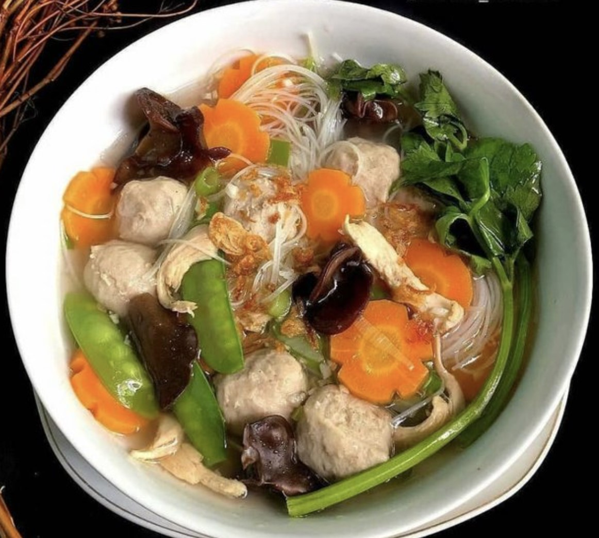

Bahan bahan
- Bakso sapi secukupnya atau ganti telur puyuh rebus sesuai selera
- Soun, rendam sebentar dengan air biasa, tiriskan
- Daun bawang dan seledri secukupnya
- 1-2 dada ayam fillet, rebus sebentar, suwir"
- Minyak goreng utk menumis bumbu
- 1/2 siung bawang bombay, cincang halus/kasa
- 1 liter air kaldu ayam/sapi
- 1/2 sdt lada bubuk
- 2 cm jahe, iris
- Garam & kaldu bubuk secukupnya
Cara Pembuatan
- Tumis bawang putih, bawang bombay dan jahe hingga harum, tumbuhan pala bubuk dan lada bubuk, aduk rata
- Tambahkan air kaldu sesuai selera, biarkan sampai mendidih
- Tambahkan wortel, biarkan hingga setengah matang, lalu tambahkan bakso, ayam suwir, kacang kapri, jamur kuping dan kaldu bubuk, garam, masak semua hingga matang
- Beberapa saat sebelum api dimatikan, tambahkan daun bawang
- Sajikan dengan bawang goreng dan seledri